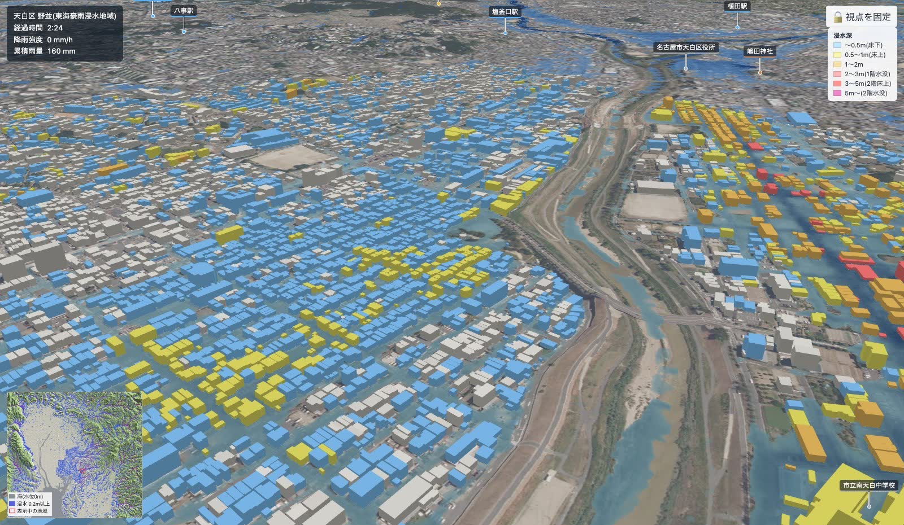

01
建物単位で浸水を計算する
PLATEAU の地形モデル（住所から作るタイルは国土地理院 5 m 標高）を 2 m 格子にし、建物の底面の高さで地盤を補正。建物は屋根の高さまでの壁として扱い、屋根の雨は縁から道路へ流れ落ちます。水深は浸水の区分ごとに色分けし、建物は周囲の浸水深で塗り分けます（床上浸水相当は周囲 0.5 m 以上）。
- 一定・中央集中型・線状降水帯・東海豪雨型・カスタム
- 下水道の排水能力
- 雨が止んだ後の引き方